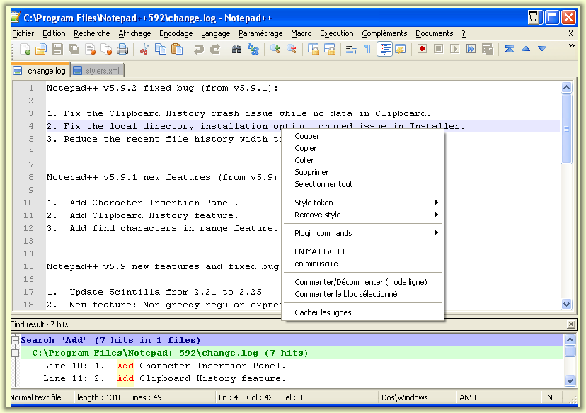

Texto original
Sugiere una traducción mejor
| Previous: La ventana de documentos | Tabla de contenido | Siguiente: Moverse entre varios documentos |
La ventana principal de Notepad ++ consiste en una serie de elementos GUI. Esta sección intentará revisarlos. Su nombre aparece como un texto de ayuda cuando el ratón pasa sobre puntos de acceso:

barra de pestañas
de la barra del estado de
la barra
de menú
de acceso directo de menú
ventana acoplable